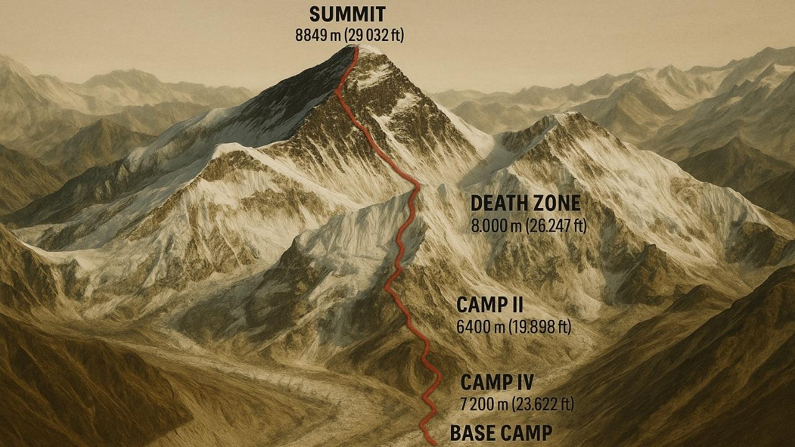

The Perilous Death Zone

The Death Zone refers to the most difficult being altitudes above 26,246 feet where the amount of oxygen in the air is insufficient to sustain human life for an extended period of time. At this chilling threshold, the human body begins to consume its own tissue for energy, cell efficiency plummets, and the risk of severe altitude sickness, frostbite, and exhaustion increases exponentially.
Climbers passing through this zone must rely on supplemental oxygen cylinders and race against a ticking biological clock to reach the summit and descend safely as fast as possible. Severe weather shifts, freezing temperatures, and potential hazards along the narrow physical ridges make this the most mentally and physically grueling section of the entire climb.